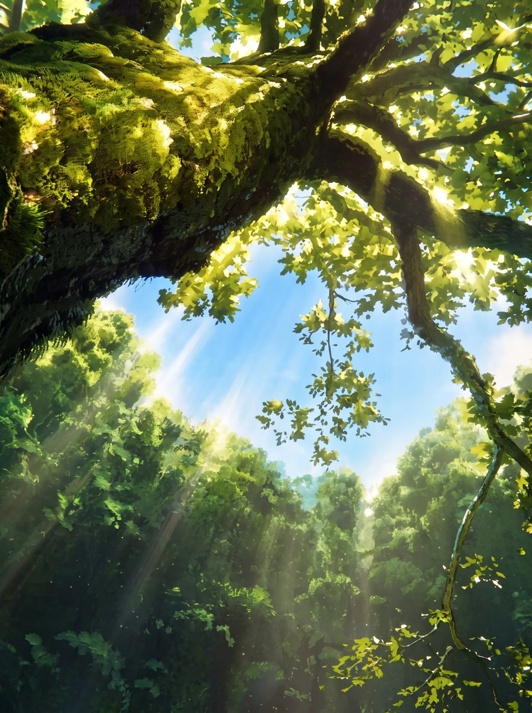
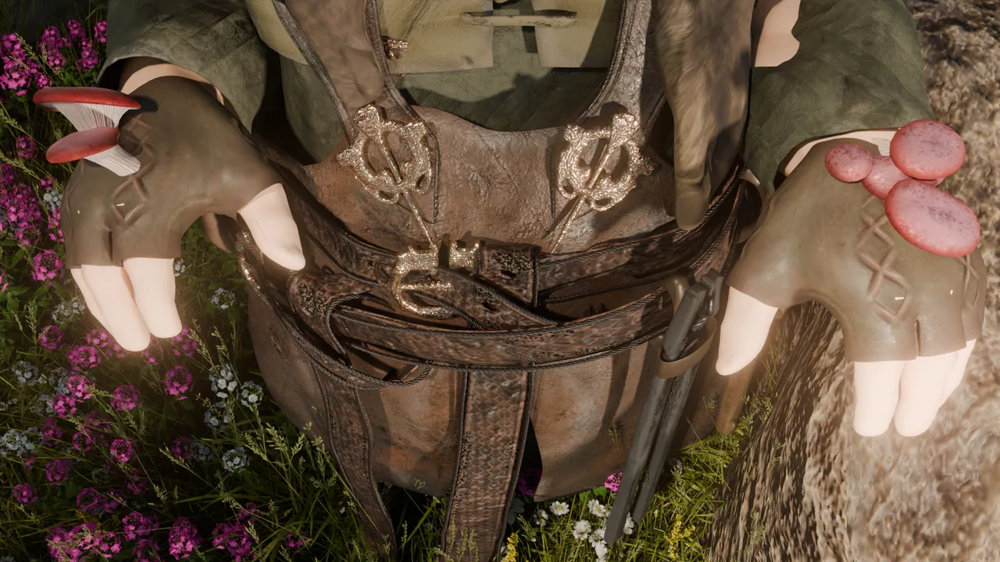
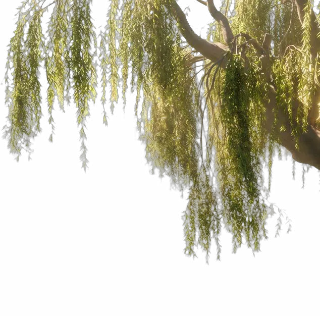
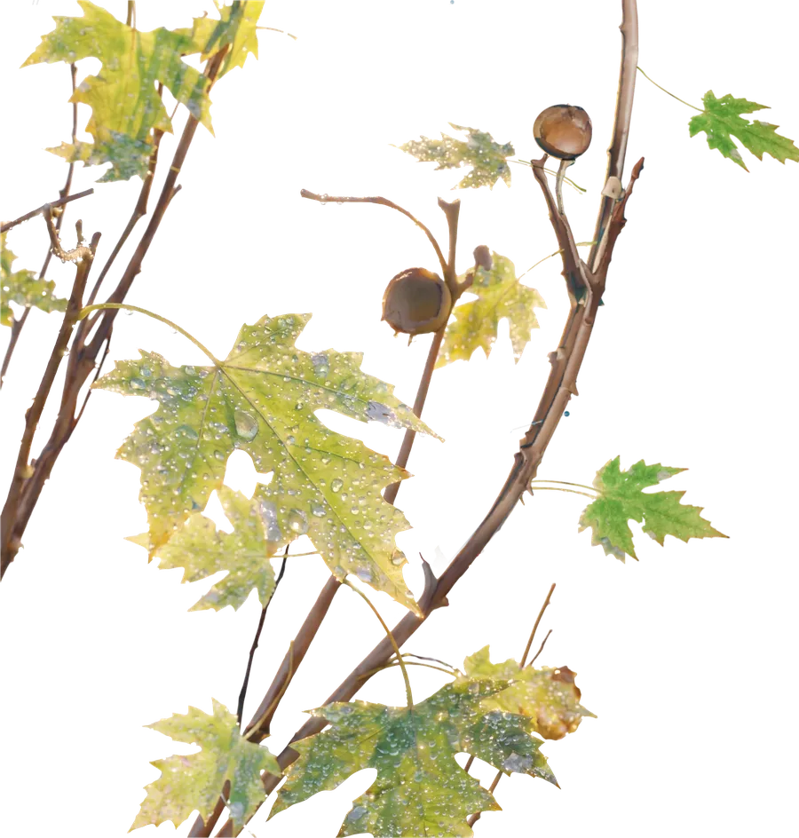
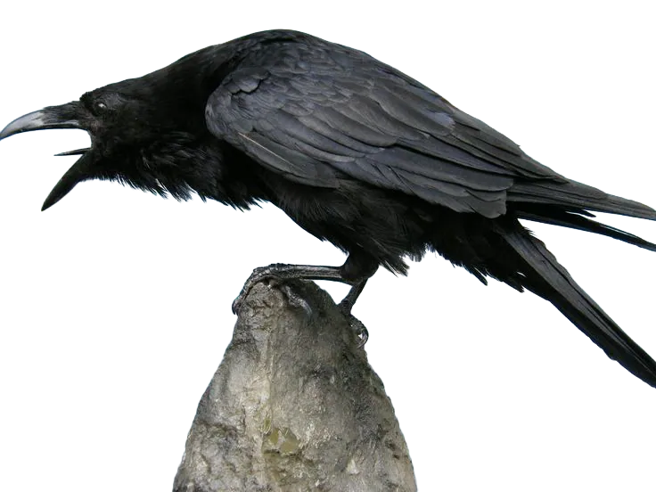
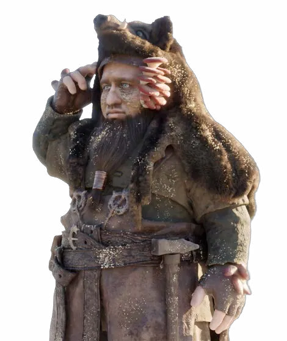
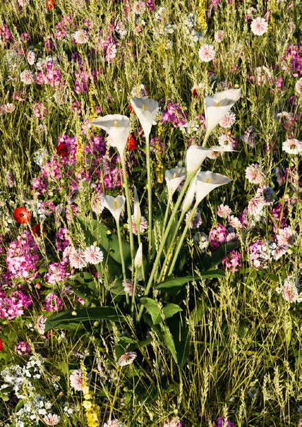
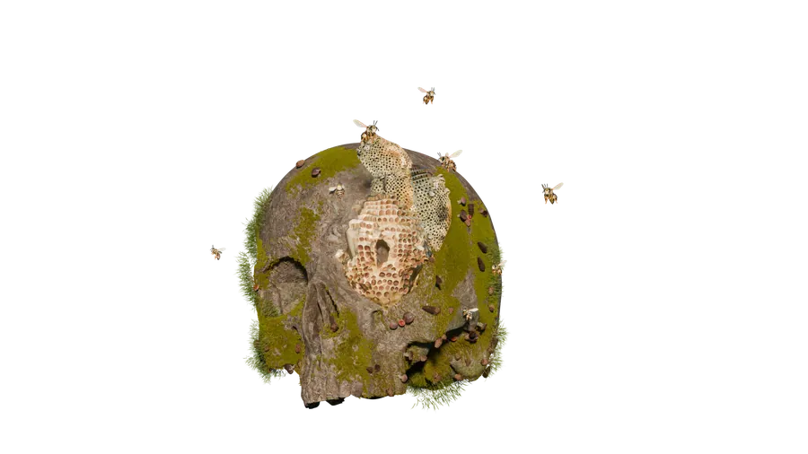
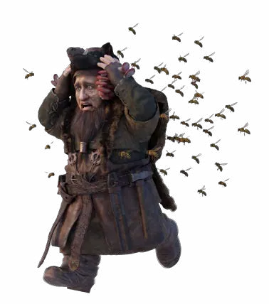
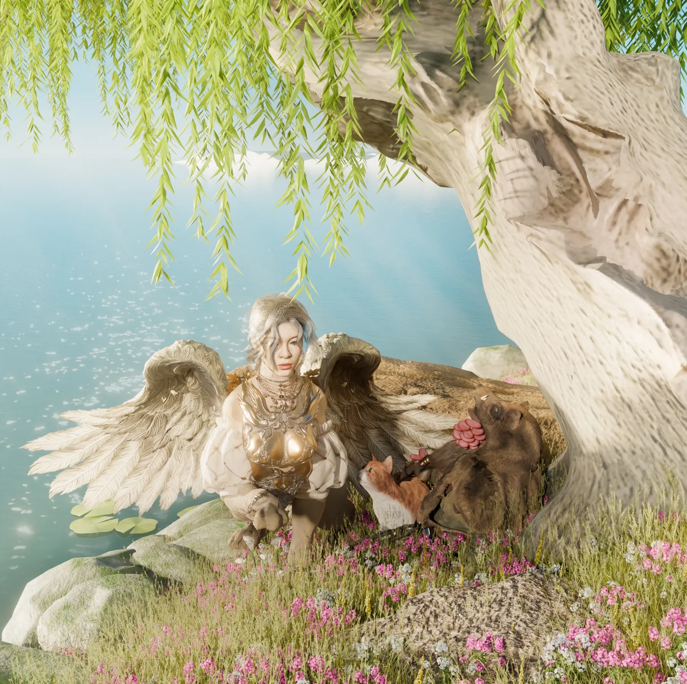

Trưa Hè Thong Dong
Buổi trưa phủ xuống khu rừng bằng một thứ ánh sáng óng ả như mật. Ánh nắng len qua tầng tầng tán lá sồi, vỡ thành vô số mảnh sáng nhỏ trải khắp nền cỏ. Gió rất nhẹ, đến mức mặt hồ nằm dưới chân mỏm đá chỉ khẽ gợn lên vài vòng sóng lăn tăn rồi lại phẳng lặng như gương. Tiếng ve phủ kín không gian, hòa cùng tiếng nước róc rách từ con suối xa, khiến cả khu rừng như đang ngân nga một khúc hát không lời của mùa hạ. Cả khu rừng như đang chìm trong một giấc ngủ trưa dài bất tận. Chỉ có một người dường như không thuộc về sự yên tĩnh ấy. Brann bước qua những bụi cỏ cao vút, vừa đi vừa kéo cổ áo.

"Nóng thật…"
Mồ hôi thấm ướt sau lưng áo. Chiếc áo lông dày đã sẫm màu vì mồ hôi. Những lọn tóc bết lại dưới vành chiếc mũ lợn rừng, thi thoảng lại rủ xuống trước mắt, buộc cậu phải đưa tay gạt lên. Chiếc túi da đeo chéo trên vai mỗi lúc một nặng hơn, kéo trễ hẳn xuống cánh tay. Đi được vài bước, Brann lại khựng lại để xốc quai túi lên, rồi cúi đầu nhìn tấm bản đồ đã nhàu đi vì bị mở ra quá nhiều lần.
Mọi dấu mốc đều khớp: Cây sồi già, mỏm đá nhìn ra hồ, dải hoa dại ven bờ… Ngay cả hình thù kỳ lạ của một phiến đá phủ rêu cũng giống hệt nét vẽ mà Eira đã cẩn thận ghi lại trước khi tiễn cậu lên đường.
Brann ngẩng đầu. Trước mặt cậu là cây sồi ấy. Một thân cây đồ sộ đến mức phải ba, bốn người ôm mới xuể, bộ rễ ngoằn ngoèo ôm lấy mỏm đá như những ngón tay khổng lồ..
"Không thể sai được, mình đến đúng nơi rồi."
Cậu khẽ lẩm bẩm, rồi đưa mắt nhìn quanh. Khoảng rừng vắng lặng. Không một bóng người. Không một ngôi nhà. Ngay cả tiếng côn trùng cũng ít đến lạ. Cậu đứng chờ. Một lúc. Rồi thêm một lúc nữa. Không có chuyện gì xảy ra.
"…Chẳng lẽ mình đến sớm?"
Brann rời gốc sồi, men theo mép hồ, hy vọng sẽ tìm thấy một con đường khác khuất sau những bụi cây. Con đường đưa cậu vòng qua một bãi cỏ ngập nắng, len giữa hai thân sồi già, rồi khuất sau một triền đá phủ đầy rêu xanh. Ít phút sau, khi bước qua khỏi bụi cỏ cuối cùng, Brann bất giác dừng lại. Trước mặt cậu. Vẫn là cây sồi ấy. Mặt hồ vẫn nằm im dưới nắng. Ngay cả hòn đá nhọn nhô lên khỏi mặt nước cũng ở đúng vị trí ban đầu.
Brann chau mày.
"Mình đi nhầm rồi."
Lần này, Brann chọn một hướng khác.
Cậu quyết định đi xa hơn, băng qua một thảm cỏ cao quá đầu gối, lách giữa hai thân cây lớn rồi đi mãi theo mùi nhựa thông đang thoảng trong gió. Thế nhưng… Khi khu rừng bắt đầu mở ra. Cây sồi già lại hiện lên trước mắt. Lần thứ ba. Rồi lần thứ tư. Mỗi con đường cậu chọn đều như một sợi chỉ mềm mại uốn cong giữa rừng, cuối cùng vẫn lặng lẽ đưa cậu quay về đúng điểm xuất phát. Brann rút chiếc la bàn trong túi áo. Kim đồng vẫn đứng yên. Cậu xoay người. Kim cũng xoay theo. Cậu gõ nhẹ lên mặt kính.
"…Lạ thật."
La bàn không hỏng. Nhưng khu rừng này… Hình như chẳng muốn để cậu đi đâu cả. Một tiếng thở dài khe khẽ thoát khỏi lồng ngực. Brann đặt chiếc túi xuống gốc cây. Hai cánh vai đau nhức sau quãng đường dài cuối cùng cũng được thả lỏng. Bóng râm dưới tán sồi mát đến mức chỉ nhìn thôi cũng đủ khiến người ta muốn ngồi xuống nghỉ ngơi đôi chút. Cậu khẽ tựa lưng vào thân cây.
Chỉ một lát thôi.
Chỉ cần…

Ý nghĩ ấy chưa kịp trọn vẹn. Brann đã khựng lại. Dưới lớp tay áo vừa được kéo lên, những cụm nấm trắng lại mọc thêm. Lúc ấy, cơn bỏng rát nơi cổ tay mới khiến cậu khựng lại. Brann chậm rãi kéo ống tay áo lên. Dưới làn da rám nắng, những cụm nấm trắng đã lan thêm một đoạn nữa. Những chiếc mũ nấm bé xíu chen nhau mọc lên quanh cổ tay, lặng lẽ như thể chúng đã lớn dần trong suốt quãng đường cậu vừa cố sức chạy. Nụ cười trên môi Brann biến mất.
"…Không."
"Chưa được."
Cậu kéo mạnh tay áo xuống như muốn che đi sự thật. Brann cúi xuống nhấc chiếc túi lên vai. Ngay khi ngẩng đầu, ánh mắt cậu chợt khựng lại. Trên mỏm đá nhô ra mặt hồ, dưới bóng râm của cây sồi già, có một cô nhân sư đang nằm ngủ. Không biết cô xuất hiện từ lúc nào. Mái tóc màu hạt dẻ xõa lẫn vào thảm cỏ, đôi cánh lớn khép hờ sau lưng. Chiếc đuôi sư tử vòng thành một đường cong mềm mại, ôm lấy một chú mèo vàng đang cuộn tròn bên cạnh. Gió lướt qua mặt hồ, khẽ lay vài sợi tóc trước trán cô. Cả hai ngủ say đến mức dường như tiếng ve cũng cố tình nhỏ lại.
Brann đứng lặng. Cậu không chắc mình vừa mới nhìn thấy họ. Brann chớp mắt.
"…Nhân sư?"
Cậu chưa từng gặp Nhân sư. Nhưng ít nhất trong tưởng tượng của cậu… Nhân sư phải trông rất đáng sợ. Hoặc rất uy nghiêm. Hoặc già nua như những gốc cây ngàn tuổi. Chứ không phải… một cô bé còn ngủ chảy cả nước miếng lên bộ lông của mình.
Brann bật cười khe khẽ. Một làn gió nhẹ từ mặt hồ khẽ lướt qua, làm vài chiếc lá khô rơi xuống mặt nước. Brann chần chừ một chút. Cuối cùng vẫn bước đến gần.
"Xin lỗi…"
Giọng cậu rất nhỏ, như sợ đánh thức cả khu rừng. Chú mèo vàng khẽ giật giật một bên tai. Nó hé mắt nhìn vị khách lạ đứng trước mặt, lười biếng vươn một chân ra phía trước, rồi lại cuộn mình sát hơn vào chiếc đuôi của cô nhân sư. Lúc sau, hàng mi của cô nhân sư mới khẽ động. Đôi mắt màu hổ phách chậm rãi mở ra, vẫn còn vương vẻ ngái ngủ. Cô nhìn Brann một lúc như để nhớ xem người đứng trước mặt mình là ai, rồi khẽ chống tay ngồi dậy. Một chiếc lá sồi mắc trên mái tóc nâu theo động tác ấy rơi xuống mặt cỏ.
"Xin lỗi…"
Giọng cô rất nhẹ.
"Có phải… ta lại ngủ quên rồi không?"
Brann thoáng ngẩn người. Cậu vốn đã chuẩn bị tinh thần sẽ phải đánh thức cô thêm vài lần nữa.
"Không."
Brann khẽ lắc đầu.
"Là ta làm phiền cô mới phải."
Soren dụi mắt, khẽ ngáp một cái. Chú mèo vàng bên cạnh cũng vươn vai, chậm rãi đổi sang một chỗ nằm nhiều nắng hơn. Cô đưa tay vuốt nhẹ lên đầu nó.
"Klid."
Brann nhìn theo bàn tay cô, rồi lễ phép gật đầu. Cậu nở một nụ cười thân thiện.
“Rất vui được làm quen với cô Klid. Tên ta là Brann.”
Cô nhân sư chớp mắt, rồi bật cười khe khẽ.
“Không phải”
"Ta là Soren."
"Đây mới là Klid."
Chú mèo vàng khẽ "meo" một tiếng, ngẩng đầu nhìn Brann rồi lại nằm xuống, chiếc đuôi lười biếng ve vẩy vài cái.
Brann hơi khựng lại.
"…À."
Tai cậu đỏ lên một chút.
"Xin lỗi."
"Ta cứ tưởng…"
Soren mỉm cười. Brann không nhịn được mà bật cười theo. Bầu không khí giữa hai người bỗng trở nên nhẹ nhõm hơn rất nhiều. Sau một thoáng ngập ngừng, cậu mới nghiêm giọng lại.
"Ta muốn hỏi một chuyện."
Soren khẽ gật đầu.
"Ta đang tìm các lãnh chúa bọ."
"Eira bảo chỉ cần đến cây sồi này là sẽ gặp được họ."
Brann ngoái nhìn khoảng rừng yên tĩnh phía sau lưng.
"Nhưng ta đã đi vòng quanh nơi này tới bốn lần."
"Vẫn chẳng gặp ai cả."
Soren lặng lẽ nghe hết. Cô không trả lời ngay. Ánh mắt chậm rãi hướng về phía mặt hồ đang phản chiếu bầu trời xanh trong. Một cơn gió lướt qua. Mặt nước khẽ rung lên. Đến cả bóng mây cũng chao nghiêng theo.
"Ngươi đến đúng nơi rồi."
Cô mỉm cười. Brann khẽ nhíu mày.

"Vậy… ta phải làm gì?"
Soren ngước nhìn bầu trời. Ánh nắng vẫn còn ở rất cao. Những vệt sáng vàng óng len qua kẽ lá, in lên đôi cánh sau lưng cô thành những mảng sáng tối dịu dàng.
"Cứ đợi thôi."
Giọng cô vẫn bình thản như mặt hồ.
"Đợi?"
"Ừ."
"Khi mặt trời xuống thấp hơn."
Brann nhìn theo ánh mắt của Soren. Rồi lại nhìn bầu trời. Mặt trời mới chỉ vừa qua khỏi đỉnh đầu. Còn quá lâu. Brann cúi xuống nhìn cổ tay mình theo một phản xạ vô thức. Dưới lớp tay áo, cơn bỏng rát vẫn âm ỉ. Cậu siết nhẹ bàn tay.
"Ta không chắc mình còn nhiều thời gian."
Soren nhìn cậu. Ánh mắt cô dừng lại nơi cánh tay được che kín bởi lớp áo da, như thể đã hiểu điều Brann không nói thành lời.
"Ta biết."
Cô đáp rất khẽ. Nói xong, Soren khẽ duỗi người. Đôi cánh sau lưng mở ra một chút rồi lại khép lại. Klid cúi đầu hít hít mấy bông hoa dại, sau đó bỗng đuổi theo một cánh bướm trắng vừa bay ngang qua. Soren lặng lẽ nhìn theo, khóe môi khẽ cong lên. Brann đứng đó, chiếc túi nặng trĩu trên vai. Một lúc lâu sau, cậu mới cất tiếng.
"…Vậy giờ ta nên làm gì?"
Soren không đáp ngay. Cô cúi xuống nhặt chiếc lá sồi vừa rơi lên đầu gối mình. Chiếc lá đã ngả sang màu vàng nhạt. Cô xoay nó trong tay vài vòng, rồi để mặc cơn gió mang nó đi.
"Nếu mệt…"
"Cứ ngồi xuống, và đợi mặt trời thay đổi."
Brann khẽ lắc đầu.
"Ta không mệt."
Nói xong, chính cậu cũng thấy lời mình nghe thật thiếu sức thuyết phục. Hai bắp chân vẫn còn nặng trĩu. Lưng áo vẫn ướt đẫm. Mồ hôi theo gò má chảy xuống cằm rồi nhỏ thành từng giọt. Soren nhìn cậu. Đôi mắt màu hổ phách vẫn dịu dàng như cũ.
“Cơ thể chúng ta không thể nói dối.”
Brann im lặng. Ở phía xa, Klid cuối cùng cũng đuổi kịp con bướm. Nó chồm tới, đập hụt, lăn một vòng trên bãi cỏ. Rồi nằm ngửa ra, bốn chân giơ lên trời như thể chẳng hề bận tâm đến việc mình vừa thất bại. Brann vô thức bật cười. Tiếng cười rất khẽ. Nhưng đủ để xua đi phần nào sự nặng nề trên gương mặt. Brann vô thức bật cười. Tiếng cười rất khẽ. Nhưng cũng đủ xua đi phần nào sự nặng nề trên gương mặt.
Tiếng cười tan vào khoảng không tĩnh lặng. Rồi khu rừng lại trở về với nhịp điệu vốn có của nó. Ve vẫn râm ran trên những tán sồi. Mặt hồ vẫn phẳng lặng. Klid cũng chẳng buồn đuổi theo cánh bướm nữa. Nó nằm phịch xuống bãi cỏ, cuộn tròn thành một cục lông vàng óng dưới nắng, đôi mắt lim dim như sắp ngủ thêm một giấc nữa.
Soren cũng không nói gì. Cô chống cằm, lặng lẽ nhìn mặt hồ. Brann đứng giữa khoảng lặng ấy. Cậu siết chặt quai túi.
"…Soren."
"Hửm?"
"Ngoài mặt trời…"
"Còn điều gì báo rằng thời điểm ấy sắp đến không?"
Soren mở mắt. Cô ngẫm nghĩ một lúc như đang lắng nghe điều gì đó trong khu rừng. Rồi khẽ đáp.
"Lá cây."
Brann nghiêng đầu.
"Lá cây?"
"Khi hơi lạnh bắt đầu đọng lại…"
"Những chiếc lá sẽ sáng lên."
Cô đưa mắt nhìn tán sồi phía trên.
"Giống như có ai dát một lớp bạc rất mỏng lên chúng."
Brann cũng ngước theo. Những phiến lá vẫn xanh biếc dưới nắng hè. Khô ráo. Không hề có lấy một giọt nước.
"…Ra vậy."
Cậu khẽ gật đầu. Soren lại khép mắt.
"Đừng lo."
"Rồi ngươi sẽ nhìn thấy."
Klid cũng khẽ ngáp một cái, cuộn mình sát đôi cánh của chủ nhân. Hai kẻ ham ngủ ấy dường như chẳng mất bao lâu để quay trở lại giấc ngủ còn dang dở. Brann đứng lặng. Ánh mắt chậm rãi chuyển từ những tán lá xuống chiếc bình nước treo bên hông.
"Lá sáng lên vì có nước…"
Cậu lẩm bẩm.
"Nếu vậy…"
"Chỉ cần có nước là được."
Brann mở nắp bình, uống một ngụm lớn. Rồi ngẩng đầu.
"Phụt!"
Một màn sương nước li ti bắn lên những cành lá phía trên. Cậu lùi lại hai bước. Chống nạnh. Ngước nhìn đầy mong đợi. Những giọt nước lấp lánh dưới ánh mặt trời. Brann mỉm cười.
"Được rồi…"
Chưa kịp nói hết câu. Từng giọt nước đã bắt đầu… Trượt xuống. Chúng lần lượt rơi khỏi mép lá.
Lộp bộp.
Lộp bộp.
Rơi thẳng xuống đầu Brann.
"…"
Cậu chớp mắt. Một giọt nước khác rơi đúng giữa trán. Rồi thêm một giọt nữa. Chẳng mấy chốc, chính cậu lại là người ướt nhất. Những chiếc lá phía trên vẫn xanh mướt như cũ. Không sáng bạc hơn. Cũng chẳng có gì thay đổi.
Brann chưa chịu bỏ cuộc. Cậu lại uống thêm một ngụm. Lần này cậu cố phun mạnh hơn.
"Phụt!"
Làn nước bay cao hơn trước. Nhưng cũng đúng lúc ấy… Một cơn gió nhẹ từ mặt hồ thổi ngang qua. Toàn bộ màn nước lập tức đổi hướng, bay ngược trở lại, tạt thẳng vào mặt Brann.

"Khụ… khụ!"
Cậu sặc nước, ho liên tục. Ở phía sau, một vài hạt nước li ti cũng theo gió bay tới. Rơi lộp độp lên chóp mũi Klid. Chú mèo khẽ nhăn mặt. Nó giật mình bật dậy, nhìn quanh đầy khó hiểu. Soren cũng khẽ hé một mắt. Đưa tay lau giọt nước còn đọng trên má.
"…Mưa sao?"
Cô ngước nhìn khoảng trời xanh không một gợn mây. Rồi lại quay sang nhìn Brann đang cầm chiếc bình nước trong tay. Ánh mắt hai người chạm nhau. Brann cười gượng.
"…Xin lỗi."
Soren chớp mắt vài cái. Khóe môi khẽ cong lên.
"Ta nghĩ…"
"Cái đó chỉ có tác dụng khi ngươi khát."
Rồi cô lại từ từ nằm xuống. Chỉ ít phút sau, hơi thở đều đều của cô lại hòa vào tiếng ve và tiếng gió. Nhìn hai chủ tớ chẳng mấy chốc đã ngủ tiếp, Brann chỉ biết thở dài. Cậu ngồi phịch xuống bãi cỏ, đưa tay vắt nước trên bộ râu đã ướt sũng.
"…Được rồi."
"Nếu không phải lá…"
"Thì còn gì nữa?"
Brann ngồi phịch xuống bãi cỏ.
"…Được rồi."
"Nếu không phải lá…"
"Thì còn gì nữa?"
Không ai đáp. Chỉ có tiếng ve vẫn đều đều ngân lên từ những tán sồi. Brann quay đầu. Soren đã ngủ mất. Một cánh tay cô gối dưới má. Mái tóc nâu xõa lẫn vào cỏ, khẽ lay theo từng cơn gió. Klid cũng đã cuộn tròn sát bên cạnh, chiếc đuôi vàng phủ ngang lên mũi. Brann mím môi.
"…Ngủ nhanh thật."
Cậu ngồi im thêm một lúc. Rồi khẽ hắng giọng.
"Soren ơi."
"…"
"Soren?"
Đôi tai sư tử trên đỉnh đầu cô khẽ động đậy. Một lúc sau, Soren mới chậm rãi mở mắt.
"Hửm…"
"Ngoài lá ra…"
Brann ngập ngừng.
"Còn điều gì sẽ thay đổi nữa?"
Soren vẫn còn ngái ngủ. Cô chớp mắt vài lần như đang gom lại những ý nghĩ còn lơ lửng đâu đó trong giấc mơ.
"Hoa."
"Hoa?"
"Ừ."
"Ban ngày…"
"Chúng thích hát."
“Còn khi những cánh hoa khép lại…”
"Cả khu rừng sẽ yên tĩnh hơn."
Brann nhìn theo. Hàng trăm bông hoa nhỏ đủ màu đang khẽ rung rinh trong gió. Thật kỳ lạ. Đứng lặng một lúc, cậu mới nhận ra thứ âm thanh tưởng như chỉ là tiếng gió ấy… Lại phát ra từ chính những bông hoa. Không phải lời ca. Mà là những tiếng ngân khe khẽ. Mỏng như tơ. Nhẹ như hơi thở. Hòa vào tiếng ve đến mức nếu không chú ý sẽ chẳng bao giờ nhận ra.
"…Ra là vậy."
Brann khẽ lẩm bẩm. Soren khẽ gật đầu.
"Chúng ngủ."
"Thì sẽ không hát nữa."
Nói rồi. Cô lại khẽ khép mắt. Chẳng mấy chốc. Hơi thở đều đều lại vang lên. Brann nhìn cô. Rồi nhìn thảm hoa. Một ý nghĩ rất quen thuộc lại lóe lên trong đầu.
"Nếu…"
"Các ngươi ngừng hát."
"Có phải khu rừng sẽ nghĩ rằng đã đến lúc nghỉ rồi không?"

Cậu đứng bật dậy. Lần này, Brann không dùng nước nữa. Cậu bước đến bên mép hồ, quỳ xuống trước một bông hoa màu tím đang đung đưa trong gió.
"Xin lỗi nhé."
Cậu nói rất chân thành.
"Ta chỉ làm phiền các ngươi một lát thôi."
Hai ngón tay cậu nhẹ nhàng khép cánh hoa lại. Tiếng ngân nhỏ lập tức biến mất. Brann sáng mắt.
"Được rồi!"
Cậu vội vàng chạy sang bông thứ hai. Rồi bông thứ ba. Bông thứ tư. Chẳng bao lâu sau, cả một khoảng cỏ ven hồ đã đầy những bông hoa bị Brann cẩn thận… khép miệng lại. Cậu chống đầu gối, thở hổn hển. Mỉm cười đầy hy vọng. Khoảng rừng… Quả thật yên tĩnh hơn đôi chút. Brann nín thở. Chờ đợi. Một nhịp. Hai nhịp. Ba nhịp.
…
Rồi…
"Phựt."
Một bông hoa khẽ bật mở.
Tiếp đó.
*"Phựt."
"Phựt."
"Phựt."

Từng bông. Từng bông một. Đồng loạt bung cánh trở lại như những chiếc lò xo bị nén quá lâu. Cùng lúc ấy… Một làn phấn hoa vàng nhạt bỗng tung lên không trung. Brann còn chưa kịp phản ứng. Đám phấn đã phủ kín cả khoảng cỏ.
"Hắt…!"
Cậu vội bịt mũi. Nhưng đã muộn.
"Hắt xì!"
"Hắt… xì!"
"Hắt xì!"
Mỗi lần hắt hơi, cậu lại vô tình thổi đám phấn bay xa hơn. Gió cũng rất nhiệt tình giúp sức. Chỉ trong chốc lát. Một đám mây phấn vàng óng đã lững lờ trôi về phía mỏm đá dưới gốc sồi… Nơi Soren và Klid vẫn đang ngon giấc. Những hạt phấn hoa lặng lẽ đáp xuống bộ lông vàng của Klid. Chiếc mũi nhỏ của chú mèo khẽ giật giật. Nó nhăn mặt.
"…Hắt xì."
Một cái hắt hơi ngắn làm cả thân mình rung lên. Klid mở hé mắt, đưa chân trước lên dụi dụi mũi, rồi lại cuộn tròn như chưa có chuyện gì xảy ra. Ở bên cạnh, vài hạt phấn khác cũng nhẹ nhàng đáp xuống mái tóc nâu của Soren. Cô khẽ nhíu mày. Hàng mi run lên.
"…Hắt xì."
Tiếng hắt hơi nhỏ đến mức gần như hòa lẫn vào tiếng ve. Soren mơ màng đưa tay quơ quơ trước mặt như muốn xua đi thứ gì đó đang bay trong không khí.
"…Nhiều phấn hoa quá…"
Cô thì thầm. Giọng vẫn còn đặc quánh vì ngái ngủ.
"Chắc… gió đổi hướng rồi…"
Nói xong. Bàn tay ấy lại chậm rãi buông xuống. Chỉ vài nhịp thở sau, hơi thở của cô đã đều trở lại. Brann đứng chết lặng giữa bãi hoa. Cậu nhìn đám phấn vẫn còn lơ lửng trong nắng. Rồi nhìn Soren. Lại nhìn xuống hai bàn tay mình. Brann chau mày, trán nhăn lại. Cậu cúi xuống phủi phủi lớp phấn bám trên áo. Đúng lúc ấy… Một bông hoa nhỏ ngay dưới chân cậu khẽ rung rinh. Những cánh hoa hé mở. Một tiếng ngân mỏng như sợi chỉ lại cất lên. Ngay sau đó. Hàng trăm bông hoa quanh hồ cũng lần lượt hòa theo. Âm thanh khe khẽ ấy nhanh chóng phủ kín khoảng rừng. Như thể chưa từng có ai cố bắt chúng im lặng. Brann chống hai tay lên đầu gối. Thở hắt ra một hơi dài.

"…Lại không được."
Cậu ngồi phịch xuống bãi cỏ. Đưa tay vò mái tóc đã lấm tấm phấn vàng. Một lúc lâu. Không ai nói gì. Chỉ còn tiếng hát li ti của những bông hoa. Brann ngước nhìn bầu trời. Mặt trời dường như… Chẳng hề nhúc nhích. Cậu khẽ cắn môi. Sự sốt ruột lại âm thầm dâng lên.
Ở phía sau, Soren bỗng cất tiếng, mắt vẫn nhắm.
"Brann."
Cậu giật mình quay lại.
"…Hả?"
"Đừng làm phiền hoa nữa."
Giọng cô vẫn đều đều.
"Chúng đang rất vui."
Brann nhìn những bông hoa vẫn rung rinh trong nắng. Khóe môi cậu khẽ mím lại.
"…Ừ."
Một tiếng đáp rất nhỏ. Nhưng bàn tay đang đặt trên đầu gối đã vô thức siết chặt thành nắm đấm. Một khoảng lặng nữa lại buông xuống. Lần này, chính Brann là người phá vỡ nó.
"…Ngoài hoa…"
"Còn điều gì nữa không?"
Soren không mở mắt.
"Còn ong."
"Còn ong ư?"
Lần này, Soren chậm rãi mở mắt. Ánh nhìn của cô hướng về phía một thân sồi già ở mép hồ. Trên cành cây cao, một tổ ong lớn đang lặng lẽ đung đưa trong nắng. Đàn ong vẫn cần mẫn bay đi bay về giữa những khóm hoa dại.
"Phải."
"Đến lúc ấy…"
"Chúng sẽ trở về nhà."
Brann nhìn theo đàn ong. Những chấm vàng li ti nối đuôi nhau bay giữa không trung.
"Về hết sao?"
"Ừ."
"Con cuối cùng trở về…"
"Cánh cửa ở tổ mới khép lại."
Brann ngẫm nghĩ.
"…Lại còn cửa là sao?"
Soren gật đầu.
"Bầy ong luôn biết khi nào nên nghỉ."
"Cả khu rừng cũng vậy."
Nói đến đó, cô lại khẽ ngáp.
"…Đừng lo."
"Rồi ngươi sẽ nhìn thấy."
Rồi như thể đã nói hết những điều cần nói. Soren lại nghiêng đầu tựa lên đôi cánh. Hàng mi khép xuống. Klid cũng trở mình một cái, áp sát vào bụng cô rồi ngủ tiếp. Brann vẫn đứng im. Ánh mắt không rời khỏi tổ ong.
"Cánh cửa…"
Cậu lẩm bẩm.
"Nếu cánh cửa đóng…"
"Thì chẳng phải…"
"Khu rừng sẽ nghĩ rằng chúng đã về hết rồi sao?"
Ý nghĩ ấy vừa lóe lên. Brann đã bước nhanh về phía gốc sồi. Cậu ngẩng đầu. Tổ ong treo lơ lửng cách mặt đất gần hai lần chiều cao của cậu.
"…Không cao lắm."
Brann bám vào thân cây, chậm chạp leo lên. Ở dưới, Klid hé một mắt. Nhìn Brann. Lại nhìn tổ ong. Chiếc đuôi khẽ ve vẩy. Nhưng rồi nó chỉ ngáp dài một cái, quyết định rằng chuyện ấy chẳng đáng để bận tâm. Brann càng lúc càng lên cao. Mùi mật ong bắt đầu thoang thoảng trong gió. Tiếng vo ve cũng rõ dần. Đến khi chỉ còn cách tổ ong một sải tay. Brann mới dừng lại. Quả thật, ngay dưới đáy tổ có một khe hở nhỏ. Hàng chục chú ong đang nối nhau bay ra bay vào. Brann gật gù.
"Cửa thật này."
Cậu lấy trong túi ra một miếng da dùng để bọc lưỡi dao. Nhẹ nhàng đưa tới.
"Chỉ cần…"
"Che lại một chút…"
Đúng lúc ấy. Một chú ong vừa trở về. Nó khựng lại trước "cánh cửa" bỗng dưng biến mất. Lơ lửng giữa không trung. Nghiêng đầu. Như đang tự hỏi.
"…?"
Rồi thêm một con nữa. Rồi thêm ba con. Chỉ trong chớp mắt. Trước cửa tổ đã ùn lại cả một đám ong vàng vo ve đầy bối rối. Brann nín thở.
"Suỵt…"
"Các ngươi đừng ồn."
"Về ngủ sớm đi."
Một khoảng lặng kéo dài đúng… Một nhịp. Rồi từ sâu bên trong tổ ong. Bỗng vang lên một tiếng vo ve trầm thấp. Giống như tiếng trống báo động. Brann từ từ cứng người.


"…Ớ…"
Ngay giây sau đó. Một đám ong đặc kín như mây vàng phụt ra khỏi cửa tổ. Brann mở to mắt.
"…Chết rồi."
Brann còn chưa kịp rụt tay, đàn ong đã ập tới. Tiếng vo ve vang lên đặc quánh như một đám mây vàng đang nổi giận.
"Khoan!"
"Khoan đã!"
Một chú ong lao thẳng vào trán cậu.
"Á!"
Rồi thêm một con nữa đốt ngay bên má. Brann cuống cuồng vung tay. Càng xua, đàn ong càng bay đặc kín quanh người. Một con bám vào chóp mũi, một con khác chích ngay sau tai, đến cả cổ áo cũng chẳng biết từ lúc nào đã chui vào thêm mấy vị khách không mời.
"Ối!"
"Đừng!"
"Đừng đốt nữa!"
Brann quẫy loạn cả lên.Bàn chân trượt khỏi thân cây. Rồi cả người mất thăng bằng.
"BỊCH!"
Brann rơi thẳng xuống bãi cỏ. Một đám lá khô tung lên. Cậu nằm ngửa, chưa kịp hoàn hồn, đàn ong đã phủ kín phía trên.
"Không!"
"Không không không!"
Brann lồm cồm bò dậy, vừa chạy được hai bước, lại bị thêm một mũi chích vào bắp chân.
"A!"
Cậu nhảy chồm lên bằng đúng một chân. Rồi lại thêm một cú nữa ngay sau gáy.
"Ối da!"
Brann ôm đầu chạy vòng quanh gốc sồi. Mỗi lần cậu đổi hướng. Đàn ong cũng đồng loạt đổi hướng theo. Tiếng vo ve đuổi sát sau lưng. Brann nghiến răng, đảo mắt khắp nơi. Rồi bất chợt nhìn thấy mặt hồ lấp lánh dưới nắng. Cậu cắm đầu lao tới. Đến mép nước không hề chần chừ.
"Ùmmm!"
Một cột nước bắn tung lên. Brann lặn hẳn xuống hồ, chỉ còn vài chuỗi bong bóng nổi lăn tăn trên mặt nước.
Đàn ong bay đến dừng lại ngay trên mặt hồ. Chúng vo ve một hồi, âm thanh dồn dập, nghe chẳng khác nào một đám người đang đồng thanh trách móc vị khách vừa cả gan phá cửa nhà mình.
Một lúc sau, như thể đã mắng đủ vị tên phá bĩnh, cả đàn mới quay đầu đi, mang theo tiếng vo ve đầy bất mãn….
Mặt hồ khẽ gợn sóng. Một lúc lâu sau, Brann mới từ từ nhô đầu lên, bộ râu ướt sũng, một chiếc lá súng còn dính ngay trên đỉnh đầu. Cậu đảo mắt nhìn quanh, thấy không còn bóng một con ong nào, mới dám thở phào nhẹ nhõm, lặng lẽ bơi vào bờ. Brann lững thững bước lên. Mỗi bước chân đều để lại một vệt nước dài trên thảm cỏ. Nước từ mái tóc, bộ râu rồi cả chiếc áo da dày cộp, nhỏ tong tỏng xuống đất. Chiếc tạp dề vốn nặng nay lại càng trĩu hơn vì ngấm nước, mỗi bước chân đều kéo theo một tiếng bẹp… bẹp… trên thảm cỏ.
Khoảng rừng dần trở lại yên tĩnh, tiếng vo ve tan vào những tán lá xa dần.
Chỉ còn Brann ngồi bệt dưới gốc sồi, hai tay ôm lấy khuôn mặt. Nước vẫn nhỏ tong tỏng từ chóp mũi xuống cằm.
"…Ui da…"
Cậu khẽ xuýt xoa. Một bên má đã sưng phồng lên rõ rệt. Trên trán cũng nổi thêm hai cục u đỏ au. Ngay cả chóp mũi cũng đỏ lựng vì vừa bị một chú ong "để ý" kỹ hơn những chỗ khác. Brann nhăn mặt đau đớn.
Ở phía bên kia. Klid vẫn chưa hiểu chuyện gì vừa xảy ra. Nó hí hửng chạy thêm một vòng quanh gốc sồi, chiếc đuôi dựng cao, thỉnh thoảng còn ngoái đầu nhìn về phía đàn ong đã bay mất, như tiếc nuối vì cuộc rượt đuổi kết thúc quá sớm.
Cuối cùng. Chú mèo mới đủng đỉnh quay trở lại. Nhẹ nhàng Klid ngồi trước mặt Brann, nghiêng đầu quan sát gương mặt sưng vù của cậu bằng ánh mắt đầy tò mò.
"…Meo?"
Brann cười méo xệch.
"Đừng cười ta…"
Klid đưa chiếc mũi hồng hồng lại gần ngửi ngửi. Rồi bất ngờ chìa chiếc lưỡi nhỏ, khẽ liếm lên vết ong đốt trên mu bàn tay Brann. Klid vẫn rất chăm chú như thể đó là việc hiển nhiên nhất trên đời.
Brann giật mình.
"…Ơ?"
Ở phía sau, Soren mỉm cười.
"Klid nghĩ…"
"Nó đang giúp ngươi."
Brann ngắm chú mèo vàng đang cặm cụi liếm lên từng vết chích.
"Vậy sao…"
Cậu khẽ đưa tay xoa đầu Klid.
"Cảm ơn nhé."
Klid nheo mắt đầy mãn nguyện, đuôi chú phe phẩy nhè nhẹ.
Soren lúc này mới bước đến gần hơn. Cô ngồi xuống bên cạnh Brann, ánh mắt chậm rãi lướt qua những vết sưng trên mặt cậu.
"Hơi nhiều đấy."
Cô khẽ nhận xét.
Brann cười gượng.
"…Ta cũng thấy vậy."
Soren đưa tay ngắt vài chiếc lá rêu mốc dưới gốc sồi. Cô đặt chúng vào lòng bàn tay, khẽ vò nhẹ.

"Cái này sẽ đỡ hơn."
Cô đưa nắm lá cho Brann.
"Cứ đắp lên."
"Đừng chà."
Brann làm theo. Làn nhựa mát lạnh vừa chạm vào da, cảm giác bỏng rát dịu đi thấy rõ. Cậu khẽ thở ra.
"…Dễ chịu thật."
Soren khẽ gật đầu.
"Ừ."
"Loài ong này không dữ."
"Chỉ ghét ai động vào nhà của chúng."
Brann khẽ gật đầu.
"…Phải rồi."
"Nếu là nhà của ta…"
"Có lẽ ta cũng sẽ tức giận."
Cậu cúi xuống nhìn nắm lá xanh trong tay. Những giọt nhựa vẫn còn mát lạnh. Vết ong đốt rồi cũng sẽ dịu đi.
Chỉ là… Điều khiến cậu nhức nhối nhất lại chẳng nằm trên da thịt. Ánh nắng vẫn vàng óng như lúc cậu mới đặt chân đến. Tiếng ve vẫn râm ran khắp khu rừng. Những bông hoa vẫn khẽ ngân nga theo từng cơn gió. Đàn ong vừa rồi còn đuổi cậu khắp nơi, giờ đã lại cần mẫn bay từ bông này sang bông khác như thể chưa từng có chuyện gì xảy ra. Mọi thứ… vẫn y nguyên như thể. Suốt khoảng thời gian vừa rồ,i chỉ có một mình Brann chạy vòng quanh trong vô ích. Brann cúi xuống nhặt chiếc bình nước vẫn còn lăn trên bãi cỏ. Nửa bình đã cạn, chiếc nắp vẫn còn dính vài cánh hoa màu vàng. Cách đó không xa, mấy bông hoa vừa bị cậu khép cánh ban nãy vẫn nở rực dưới nắng. Brann chậm rãi ngước nhìn bầu trời. Mặt trời vẫn ở đó. Vẫn treo lặng lẽ trên khoảng trời xanh. Brann thở hắt ra một hơi dài.
Một khoảng lặng khẽ buông xuống. Soren nhìn cậu. Một lúc lâu sau, cô mới cất tiếng.
"Brann."
"Hửm?"
"Ngươi mệt rồi."
Brann định lắc đầu theo phản xạ nhưng rồi động tác ấy dừng lại giữa chừng. Mồ hôi trên trán còn chưa kịp khô. Hai cánh tay vẫn âm ỉ đau sau quãng đường dài và cuộc rượt đuổi vừa rồi. Chiếc túi da nặng trĩu vẫn nằm chỏng chơ dưới gốc sồi, nơi cậu đã ném nó xuống lúc bỏ chạy. Ngay cả hơi thở cũng vẫn chưa đều lại. Soren khẽ mỉm cười.
"Ngươi nghỉ một lát đi."
"Không cần vội."
"Cánh rừng này sẽ không chạy mất đâu."
Brann không đáp. Hai bàn tay cậu vẫn siết chặt lấy chiếc bình nước đã gần cạn với những khớp ngón tay trắng bệch. Cậu cúi đầu, khẽ nghiến răng, cậu tu nước ừng ực. Cậu vẫn chưa cam lòng chấp nhận rằng suốt cả một buổi chiều, mọi cố gắng của mình chỉ đổi lại một bộ quần áo ướt sũng và khuôn mặt sưng húp vì ong đốt. Dường như chỉ có cậu… là người duy nhất vẫn đang cố chạy nhanh hơn cả thời gian.
Ở bên cạnh, Soren cũng không nói thêm. Cô hiểu rằng lúc này, mọi lời an ủi đều chẳng còn ý nghĩa. Một cơn gió dịu dàng khẽ lướt qua, mặt hồ rung lên thành những gợn sóng. Những bông hoa ven bờ vẫn khe khẽ ngân nga thứ giai điệu chỉ mình chúng hiểu. Và xa hơn một chút, tiếng chim non chuyền cành hòa cùng tiếng ve, tiếng lá xào xạc và tiếng nước róc rách từ con suối khuất sau rừng. Mọi âm thanh đều rất nhỏ, nhẹ nhàng nhưng khi hòa vào nhau lại tạo thành bản hòa tấu mùa hạ chậm rãi lan đi khắp cả khu rừng.
Klid khẽ ngáp. Nó bước từng bước chậm rãi đến trước mặt Brann. Rồi chẳng hề xin phép mà chui tọt vào giữa hai cánh tay đang buông thõng của người thợ rèn, rồi cuộn tròn trong lòng cậu.
Brann cúi xuống nhìn, khóe môi cậu vẫn còn mím chặt nhưng bàn tay đã vô thức đặt lên lưng chú mèo. Bộ lông ấm áp ấy khẽ phập phồng theo từng nhịp thở. Và dần dần, Brann cũng thôi siết chặt nắm tay. Những ngón tay chậm rãi thả lỏng, khẽ vuốt dọc sống lưng chú mèo. Klid khẽ rừ một tiếng rất nhỏ, rồi ngủ ngon lành. Không gian dần trở nên thật yên tĩnh. Brann tựa đầu vào thân sồi. Lắng nghe tiếng gió, tiếng chim, tiếng hoa mọi âm thanh đan vào nhau như một khúc hát mùa hạ. Ánh nắng xuyên qua tán sồi khiến những đốm sáng nhảy trên mặt đất. Gió khẽ mơn man gò má còn hơi đau rát. Bàn tay Brann vẫn đặt trên lưng Klid. Ấm áp. Êm dịu. Chẳng biết từ lúc nào, đôi mắt cậu cũng chầm chậm khép lại.
…
Một tiếng "meo" rất khẽ. Brann giật mình, cậu từ từ mở mắt. Klid đang ngồi ngay trước mặt với đôi mắt vàng tròn xoe chăm chú nhìn cậu. Thấy Brann đã tỉnh. Nó vui vẻ phe phẩy đuôi rồi ngoắt một phát, lập tức phóng theo một đàn chim vừa đáp xuống bãi cỏ. Brann chống tay ngồi dậy, vừa ngẩng đầu. Cậu liền sững người. Cảnh vật như đã thay đổi. Ánh sáng … như đã đổi khác. Không còn gay gắt như giữa trưa mà trở nên dịu dàng và trong trẻo.
Mặt trời đang chậm rãi nghiêng về phía chân rừng. Những tia nắng cuối ngày xuyên qua tầng tầng tán lá, trải dài trên mặt hồ thành vô số dải sáng lung linh, như thể cả mặt nước hòa quyện với bầu trời. Brann đứng dậy, lặng người ngắm nhìn. Từ khắp khu rừng, những đàn ong bắt đầu thong dong trở về. Chúng không còn tản ra khắp nơi như ban ngày, mà nối nhau thành từng đoàn vàng óng, lặng lẽ bay về phía những tổ dưới tán sồi. Ở ven hồ, những đóa hoa nhỏ cũng từ từ khép cánh. Tiếng hát đã theo Brann suốt cả buổi chiều dần lắng xuống. Cho đến khi cả khu rừng chỉ còn tiếng gió rất khẽ. Một làn hơi lạnh mong manh cũng theo hoàng hôn chậm rãi lan tới trên những tán lá. Những giọt sương đầu tiên lặng lẽ kết lại. Dưới ánh chiều tà, mỗi phiến lá bỗng ánh lên một sắc bạc dịu dàng tựa như có ai vừa nhẹ tay phủ lên cả khu rừng một lớp bụi sao lấp lánh.
Brann gần như quên cả chớp mắt. Mọi điều Soren nói đều đang lần lượt diễn ra trước mắt cậu. Không sớm hơn, không muộn hơn, đúng vào khoảnh khắc mà khu rừng đã lựa chọn. Ngay khi mặt trời chạm tới đường chân trời ,cả mặt hồ bỗng bừng sáng. Ánh hoàng hôn trải kín mặt nước, khiến hồ nước giống như một tấm gương khổng lồ, nối liền bầu trời với một thế giới khác. Những gợn sóng bất chợt lan ra. Ánh sáng trên mặt hồ bắt đầu lay động. Rồi từ trong làn nước trong vắt ấy. Một cung điện dần hiện ra phản chiếu dưới mặt nước. Những mái vòm cao vút, hững ngọn tháp thanh mảnh, những ô cửa hình vòm nối tiếp nhau bất tận, những mảng gạch men xanh lam và vàng đồng rực rỡ phản chiếu ánh hoàng hôn. Cả tòa cung điện mang dáng vẻ phương Đông huyền bí, vừa lộng lẫy, vừa hư ảo như được xây nên từ ánh sáng, mặt nước và những giấc mơ.
Brann đứng bất động. Trong đôi mắt mở to của cậu cả thế giới kỳ diệu ấy đang phản chiếu ở phía sau mặt hồ. Soren chậm rãi mở mắt.
"Đến lúc rồi."
Klid cũng vừa chạy trở lại. Trong miệng chú ngậm một chiếc lông chim xanh biếc. Nó đặt món quà nhỏ vào tay Brann. Rồi ngẩng đầu nhìn cậu.
"…Meo."
Brann mỉm cười. Cẩn thận cài chiếc lông vào quai túi.
"Ta sẽ giữ gìn nó."
Cậu quay sang Soren. Khẽ cúi đầu.
"Cảm ơn cô."
Soren chỉ mỉm cười.
"Chúc ngươi lên đường bình an."
Brann giơ tay vẫy nhẹ. Rồi bước về phía mặt hồ đang mở ra cánh cửa dẫn tới thế giới của các Lãnh chúa Bọ. Soren vẫn đứng dưới gốc sồi. Lặng lẽ dõi theo cho đến khi bóng dáng người thợ rèn nhỏ bé tan dần trong ánh hoàng hôn. Cô mới khẽ ngáp. Quay người rồi lại nằm xuống đúng chỗ cũ dưới gốc sồi. Klid cũng nhảy lên nằm sát bên cạnh. Mặt trời từ từ khuất sau những tán cây và cả khu rừng lại chìm vào nhịp điệu thong dong vốn có.
"Thời gian không chờ đợi bất kỳ ai. Nhưng nó luôn dành phần thưởng cho những ai biết chờ đợi."